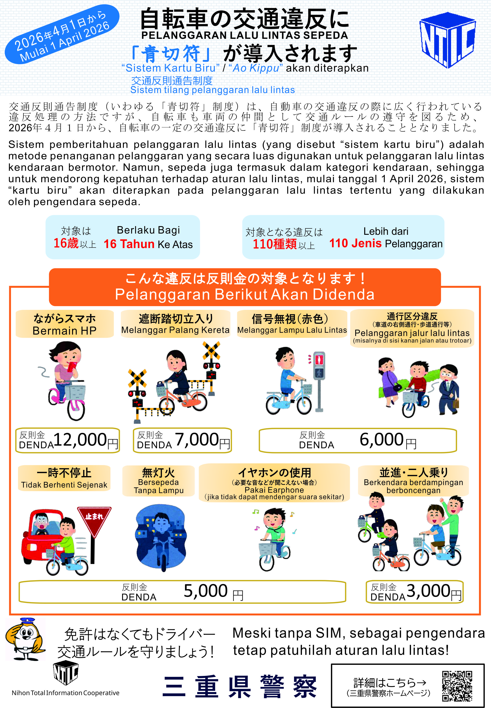

← Kembali ke Beranda

Di Jepang, sepeda telah dikategorikan sebagai kendaraan di bawah Undang-Undang Lalu Lintas. Dalam beberapa tahun terakhir, peraturan untuk pengendara sepeda semakin diperketat. Anda dapat didenda bila melanggar aturan lalu lintas, terlebih Anda akan meninggalkan catatan pelanggaran yang dapat memengaruhi perpanjangan visa Anda.
🚨 Larangan Keras & Denda Hukum Lalu Lintas:
Pastikan Anda menghindari pelanggaran berikut saat berangkat kerja atau jalan-jalan:
- Menggunakan HP Saat Bersepeda: Dilarang keras menelpon, melihat peta, atau bermain HP saat sepeda berjalan. (Denda hingga 100.000 Yen / Penjara)
- Berboncengan (Futari-nori): Sepeda standar hanya boleh dinaiki oleh 1 orang. Dilarang membonceng teman di belakang. (Denda hingga 20.000 Yen)
- Menggunakan Payung (Sashi-kasa): Saat hujan, Anda wajib menggunakan jas hujan (raincoat). Dilarang bersepeda sambil memegang payung karena mengganggu keseimbangan. (Denda hingga 50.000 Yen)
- Mendengarkan Musik (Earphone): Dilarang menggunakan earphone atau headphone karena membuat Anda tidak mendengar suara klakson kendaraan atau peringatan sekitar. (Denda hingga 50.000 Yen)
- Bersepeda Setelah Minum Alkohol: Sama seperti mobil, bersepeda dalam kondisi mabuk adalah kriminalitas berat. (Denda hingga 1.000.000 Yen / Penjara 5 tahun)
📌 Kewajiban Penting Pesepeda di Jepang
1. Wajib Menyalakan Lampu di Malam Hari
Begitu hari mulai gelap, Anda wajib menyalakan lampu depan sepeda. Bersepeda tanpa lampu di malam hari sangat berbahaya dan akan langsung dihentikan oleh polisi untuk diperiksa.
2. Aturan Jalur Bersepeda
Secara umum, sepeda harus berjalan di sebelah kiri jalan raya (searah dengan mobil). Anda hanya boleh bersepeda di trotoar pejalan kaki jika terdapat rambu khusus yang mengizinkan, dan Anda harus mendahului pejalan kaki dengan kecepatan yang sangat rendah.
3. Menggunakan Helm (Sangat Dianjurkan)
Pemerintah Jepang telah mengeluarkan aturan yang mewajibkan seluruh pengguna sepeda untuk berusaha menggunakan helm keselamatan demi melindungi diri dari kecelakaan fatal.
🛠️ Pendaftaran Anti-Maling (Bouhan Toroku) & Asuransi
Jangan Pernah Memakai Sepeda Tanpa Izin: Meminjam sepeda teman tanpa izin tertulis, atau mengambil sepeda yang tergeletak di pinggir jalan dianggap sebagai Tindakan Pencurian. Jika dihentikan polisi, Anda akan ditangkap.
- Bouhan Toroku (防犯登録): Setiap sepeda di Jepang wajib didaftarkan atas nama pemiliknya ke kepolisian setempat. Jika membeli sepeda bekas dari teman, pastikan Anda melakukan proses balik nama di toko sepeda untuk menghindari tuduhan pencurian.
- Asuransi Sepeda (Jitensha Hoken): Di banyak wilayah di Jepang, memiliki asuransi sepeda adalah Kewajiban Hukum. Asuransi ini melindungi Anda dari biaya ganti rugi yang sangat besar jika Anda menabrak pejalan kaki hingga terluka.